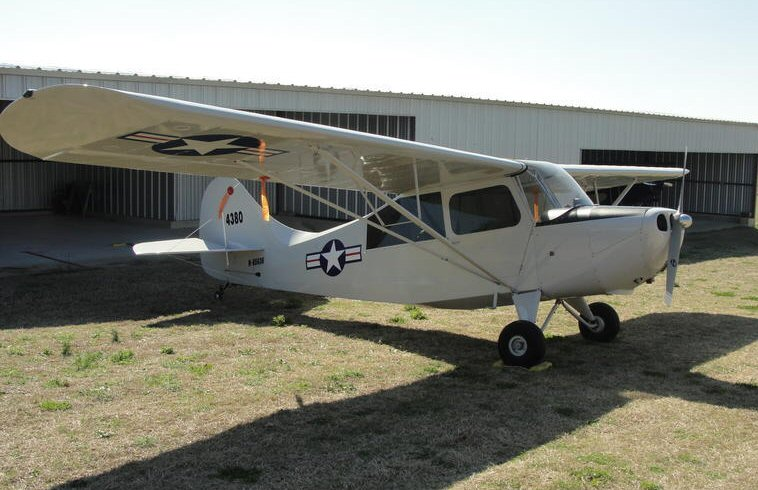

Welcome to the Flying Circus Airshow & Aerodrome
Originally formed in 1970 using the name “Flying Circus Aerodrome”, a group of aviators decided to fly replicas of WWI aircraft to simulate the "barnstorming" activities of that post war period. However, this proved to be a daunting task as these rather fragile aircraft required a considerable amount of time, effort, and money to keep them flying. As a result, many members of that original group, worn out from the effort, decided to close down the operation.
However, a core group of die-hard aviators refused to give up - they bought the rights to "The Flying Circus" and reorganized. This core group, using relatively newer and more robust aircraft like the Waco and Stearman primary trainers, became the founders of the present day "Flying Circus". This airshow has carried on since that time as a demonstration of the "Golden Years of Flight", which is characterized by the barnstorming era which came about in the years between the two World Wars.
About all that has changed from that day to this, is that the Flying Circus has grown not only in its membership, but also in the variety and number of aircraft in our inventory. The aerial demonstrations, thrilling acts, and the ride hopping operations, which were central to the barnstorming era are still an essential part of our program.
With the exception of the Flying Circus silver and black 450 hp Stearman, all of the the aircraft on the field are privately owned. And barring the occasional work or family commitment, their pilots bring them to the field to share them with the audience each year, from the first Sunday in May through the last Sunday in October.
The Flying Circus Aerodrome is located 14 miles SE of Warrenton, VA and 22 miles NW of Fredericksburg, VA.
We are just off Route 17, at 5114 Ritchie Road (Route 644) in Bealeton, VA.
Just look for the Flying Circus Airport Sign
Warrenton/Fauquier Airport (KHWY)
Contact the Flying Circus (540-439-8661) to arrange for shuttle transportation.
Adults......................... $ 20.00
Military Members.... $ 15.00*
Children 5-12............. $ 10.00
Children Under 5........... FREE
* With valid Military ID (Act/Rsv/NG/CG/Ret)
Open Cockpit Biplane (Stearman) - Single Passenger
(Standard Ride) ... $ 100.00
(Aerobatic Ride)... $ 180.00
* Max passenger weight = 270 - 285 lbs.
NOTE: You must be at least 16 years old to take an Aerobatic Ride.
Open Cockpit Biplane (Waco/Travel Air) - Two Passengers
(Standard Ride) ... $ 180.00
* Max combined passenger weight = 350 lbs.
Enclosed Cockpit (Piper Cub) - Single Passenger
(Standard Ride) ... $ 65.00
* Max passenger weight = 130 - 180 lbs depending on the aircraft
* Please use the weight limits listed above as a guide when determining the type of ride you wish to purchase.
These are typical weight limits for hot, humid, summer flying conditions.
Please note that the actual weight limits can vary due to fuel load, wind, and atmospheric conditions.
"Standard Rides" vs "Aerobatic Rides"
The Standard Ride is an 8-10 minute mostly "straight-and-level" ride with some steep turns and wingovers for excitement.
The Aerobatic Ride is approximately 15 minutes and includes some or all of the basic aerobatic maneuvers: Spin, Aileron Roll, Barrel Roll, Loop, Snap Roll, Cuban 8, and Split "S".
Adult Leaders.......................... $ 15.00
Scouts age 13+........................ $ 15.00
Scouts age 5-12....................... $ 10.00
See the Flying Circus Scout Page for additional information on scout group pricing.
NOTE: Scout Group Rates Are Not Available during the Annual Hot Air Balloon Festival Weekend
To obtain a Flying Circus Airshow Season Pass please download, print, and complete the form found HERE and mail with payment to:
Flying Circus Airshow Season Pass
P.O. Box 99
Bealeton, VA 22712
Please make check or money order payable to:
The Flying Circus Airshow
To obtain a Flying Circus Airshow Gift Certificate please download, print, and complete the form found HERE and mail with payment to:
Flying Circus Airshow Gift Certificates
P.O. Box 99
Bealeton, VA 22712
Please make check or money order payable to:
The Flying Circus Airshow
| Airshow Date | Barnstorming Airshow and Special Events |
|---|---|
| Sun May 7th | Opening Airshow |
| Sun May 14th | Mother's Day Airshow - Flower drop for all the moms! |
| Sun May 21st | Airshow & Kids Day - All kids under 18 get in FREE Vendors and special activities 11am-2pm, Come early to check out the extras on this special day! |
| Sun May 28th | Airshow |
| Sun Jun 4th | Airshow |
| Sun Jun 11th | Father's Day Airshow |
| Sun Jun 25th | Airshow |
| Sun Jul 2nd | Airshow |
| Sun Jul 9th | Airshow |
| Sun Jul 16th | Airshow |
| Sun Jul 23rd | Airshow |
| Sun Jul 30th | Airshow & Motorcycle Day & Kids Day $10 admission for Motorcycle Riders - All Kids under 18 get in FREE |
| Sun Aug 6th | Airshow |
| Sun Aug 13th | Airshow |
| Sat Aug 19th | Annual Hot Air Balloon Festival - Airshow starts at 1:30 PM (1 hour earlier) |
| Sun Aug 20st | Annual Hot Air Balloon Festival - Airshow starts at 1:30 PM (1 hour earlier) |
| Sun Aug 27th | Airshow |
| Sun Sep 3rd | Airshow |
| Fri Sep 8th | No Airshow - RC Model Fly In |
| Sat Sep 9th | No Airshow - RC Model Fly In |
| Sun Sep 10th | Airshow & RC Model Demonstration |
| Sun Sep 17th | Airshow |
| Sun Sep 24th | Airshow |
| Sun Oct 1st | Airshow & Hot Air Balloon Rally |
| Sun Oct 8th | Airshow & Fall Motorcycle Day - $10 admission for Motorcycle Riders |
| Sun Oct 15th | Airshow & British Car Show & NV Corvette Car Club |
| Sun Oct 22nd | Airshow |
| Sun Oct 29th | Last Airshow of the 2023 Season |
| Stearman N68853, 1943, Silver & Black (Owner: Flying Circus). This Stearman is our work horse. It is powered by a 450 horse power Pratt & Whitney engine which drives a variable pitch propeller for maximum efficiency. Used for the opening skydives, and the wing walking acts, this aircraft has been modified to include a special stand which is used by our wing walkers when aerobatics maneuvers are performed. | |
| WACO UPF-7 N2291 (PT-14), 1939, U.S Army Blue and Yellow (Owner: Mike King). This aircraft is one of 14 purchased by the U.S. Army Air Corps to determine whether the Waco or the Stearman would be the mass produced Primary Trainer to be used by the U.S. Army Air Corps and the U.S. Navy. The UPF-7 is powered by a 220 horsepower Continental 7 cylinder engine, weighs 2,600 pounds, cruises at 110 miles per hour using 12 gallons gasoline per hour. The Waco is capable of carrying 2 passengers in it wide front cockpit and gives the double, or "fly together" rides. | |
| Corbin Jr. Ace, N4731C “Fokker D VII 3/4” Red & White (Owner: Mike Bishop). The first "wide body" home built, the Junior Ace was the two seat successor of the Corbin Baby Ace, and is powered by a 75 horsepower Continental engine. This home built aircraft was recently completely overhauled by Mike Bishop and his family. The aircraft has been given a custom paint scheme that transforms it into a WWI German fighter, flown by the infamous “Black Baron” himself! | |
| Stearman N4786N "Terryific", 1943, Insignia Blue & White with Checkered tail and Sunburst wings. (Owner: Dave Conn), This former crop duster was rebuilt as an airshow airplane by Peter Jones in Cleveland, MS back in 1970. "Terryific" (named in honor of Dave’s wife Terry) is used to perform low level aerobatic demonstrations, formation flying and for giving aerobatic rides to the public. | |
| Stearman N53414 "88", 1942, Navy Yellow & Red (Owner Bill Honan). Built at the Boeing plant in Wichita, Kansas, this primary trainer served as a crop duster before being restored to her original configuration. The standard Navy coloring for primary training since the 1920's was all-over chrome yellow to achieve maximum visibility. They were nicknamed "Yellow Perils" because of their color and the student pilots in the cockpit. This Stearman also display a red band around the fuselage indicating its use as an instrument trainer. “88” is flown in a variety of acts during the airshow, and is also used for open cockpit rides before and after the show. | |
| Fleet Model 2 N9433 "USS Akron", 1929, Silver and Yellow (Owner Bryon Stewart). The Consolidated Aircraft Company produced the "Fleet" as a trainer in the late 1920s and early 30s. The Fleet was rugged, reliable, economical and easy to fly, but quite capable in the hands of an experienced flyer. The Fleet is representative of the U.S. Navy aircraft assigned to the USS Akron. The USS Akron was one three dirigibles outfitted with a trapeze that allowed an aircraft to fly up and attach itself to the airship to then be taken into the airship to be refueled and rearmed. | |
| Stearman N501TT "106", 1940 A75N1(PT17), Grey & Yellow (Owner: Keith Firmin). Painted in the original US-Navy paint-scheme of YELLOW wings with GREY fuselage, "106" is one of the newest members of the Flying Circus fleet. This recently restored and emaculate aircraft is used for ride hopping, formation flying, balloon busting, and dropping the occasional skydiver. One of the unique features of this aircraft is the built-in step located behind the trailing edge of the lower wing | |
 |
Stearman N49986 “Inverted Roberta", 1941 Army Blue & Yellow (Owner: Justin Currier). This Stearman was first used at the Flying Circus in 1982. “Inverted Roberta" is used for formation flying, balloon busting, and dropping the occasional skydiver. This model A75N Stearman has a 32 foot wingspan. (The lower wing is a foot shorter) It flies at a cruise speed of 96 miles per hour, stalls at 53 miles per hour and can take off in 600 feet. Equipped with a 220 horse power Continental radial R670 engine, Fuel consumption is 12 gallons per hour. |
| Waco ZPF-7 NC32162, 1942, Burgundy & Cream (Owner: John Corradi). This unique aircraft saw Army Air Corps service in 1942-1944, and was owned for almost fifty years by a member of the Weaver family, as in Weaver Aircraft COmpany (WACO). This one of only a handful with the canopy over the aft cockpit. The original Continental 220 hp engine was changed to a 282 hp Jacobs during a recent restoration, changing the designator from UPF-7 to ZPF-7. A Waco makes a great barnstorming airplane, because the front cockpit is made for two...So, how about a ride? | |
| Piper J-3 Cub N4693S, 1946, Cub Yellow (Owner: Kirk Wicker). This beautiful Cub is powered by a Continental 7S horsepower engine. These early Piper Cub aircraft went on to become the most famous basic training aircraft in aviation history. Kirk takes the Cub to the extents of its performance envelope (and perhaps a bit beyond) as he performs incredibly heart-stopping low-level aerobatics.Kirk also demonstrates the amazing control of the aircraft as he shuts off the engine, then performs an aerobatic routine, and finally glides to a precision landing right in front of the crowd. | |
| Piper L-4 N33554 “Grasshopper”, 1945, Olive Drab (Owner: Chuck Tippet). The L-4 is the military version of the Piper Cub. These versatile aircraft were used to scout for the enemy during World War II. Yet the pilot of one of these aircraft is credited with shooting down the last German aircraft during wwII, and he did it with a .45 caliber pistol air to air. The L-4 is used to demonstrate the “Air Mail Bag” pickup and is also used for enclosed cockpit rides before and after the airshow. | |
|  | Piper L-16 N85636 “Sweet Sixteen”, 1946, Grey (Owner: John Corradi). This beautiful little aircraft started life as an Aeronca 7AC Champ, a popular post-war trainer. If it looks brand-new, it is; it’s fresh from a six-year total restoration, during which time it was modified to military liaison-aircraft specs, which included a more powerful engine and electrical system. It is flown by Johnny Corradi, son of Waco pilot John Corradi. The L-16 is used to demonstrate the “Air Mail Bag” pickup, and is also used for enclosed cockpit rides before and after the airshow. |
| Stearman N27WE “Gulfhawk", 1943 Orange, White & Blue (Owner: Mike Truschel). This stearman is painted to look like the famous Grumman Hawk 1A flown by Alford J. Williams for the Gulf Oil Company from 1930 to 1936 as the "Gulfhawk." | |
 |
John D. King's 300HP Stearman "747" Standard Rides |
| Charlie Schwenker's Pitts Special Aerobatics |
|
| Charlie Schwenker's Extra 300 Aerobatics |
|
 |
Dave Brown's Stearman "No Bucks - No Buck Rogers" Aerobatic Rides |
| Scott Francis' Giles 202 Aerobatics |
|
| John Elliott's Fleet | |
| John Elliott's Bird |